PRO-
движение
движение
Летом организм не нуждается в выработке тепла, поэтому тратит на основные процессы жизнедеятельности меньше энергии, чем зимой или осенью. Главной задачей в этот период является охлаждение, поэтому повышается потребность в воде и легкоусвояемой пище. В связи с этим рекомендовано снизить калорийность рациона до 1200-1500 ккал, сохраняя сбалансированность БЖУ (белков, жиров и углеводов). В линейках питания Grow Food, например, представлено 3 основных меню, которые идеально подойдут для летнего сезона, так как соответствуют всем принципам здорового рациона. К тому же питаясь по одной из программ, вам удастся похудеть до желаемого размера без вреда для здоровья.
Скорректировав энергетическую ценность ежедневного меню, следует уделить внимание количеству приемов пищи, их должно быть не менее 5-ти. Объемы порции могут быть по 150-250 г, но не более 300 г. Принципы питания в летнюю жару также включают обильное питье. Старайтесь употреблять очищенную бутилированную воду, свежевыжатые соки, натуральные морсы с минимальным количеством сахара. Хорошо утоляет жажду зеленый чай. Что касается еды, то Роспотребнадзор рекомендует отдавать предпочтение следующим продуктам питания:
Не забывайте следить за сроками и температурой хранения продуктов питания и готовой еды. В жару микроорганизмы развиваются быстрее и могут привести к отравлениям или расстройствам пищеварения, поэтому хранить их следует в холодильнике, но не более 3-х дней.
Существует также ряд продуктов, которые стоит исключить или уменьшить их количество не только летом, но и в другое время года, когда вы придерживаетесь основного рациона. К ним относятся:
Также стоит отказаться от большого количества кофе и обязательно выпивать после него стакан воды, так как напиток обезвоживает организм.
Хорошее самочувствие в жаркие летние деньки зависит не только от питания. Важно избегать долгого пребывания на солнце без головного убора, не выходить на улицу в самые жаркие часы. Занятия спортом лучше проводить утром или вечером, пока на улице прохладно, чтобы избежать чрезмерного переутомления. Придерживаясь простых рекомендаций, вы будете чувствовать себя превосходно даже в самые знойные дни лета.